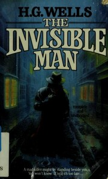
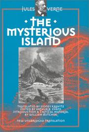
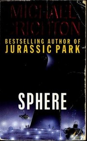

The Science of today is the technology of tomorrow.
Frankenstein
Mary Shelley's timeless gothic novel presents the epic battle between man and monster at its greatest literary pitch. In trying to create life, the young student Victor Frankenstein unleashes forces beyond his control, setting into motion a long and tragic chain of events that brings Victor to the very brink of madness. How he tries to destroy his creation, as it destroys everything Victor loves, is a powerful story of love, friendship, scientific hubris, and horror.

The invisible man
This book is the story of Griffin, a scientist who creates a serum to render himself invisible, and his descent into madness that follows.

The Mysterious Island
This sequel to "20,000 Leagues Under The Sea" doesn't advertise itself as such. Most of the book concerns the efforts of a group of hot-air balloon castaways in the south Pacific ocean attempting to use modern knowledge in order to survive in near-desert-island conditions. "Robinson Crusoe" (Defoe, 1719) started a trend of survival tales that lasts in some respects to this day and "Island" (1874) is Verne's contribution to that body of work. In my estimate, no film so far has done this book justice.

Sphere
A group of American scientists are rushed to a huge vessel that has been discovered resting on the ocean floor in the middle of the South Pacific. What they find defines their imaginations and mocks their attempts at logical explanation. It is a spaceship of phenomenal dimensions, apparently, undamaged by its fall from the sky. And, most startling, it appears to be at least three hundred years old….